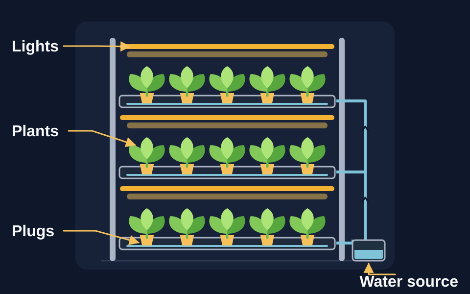
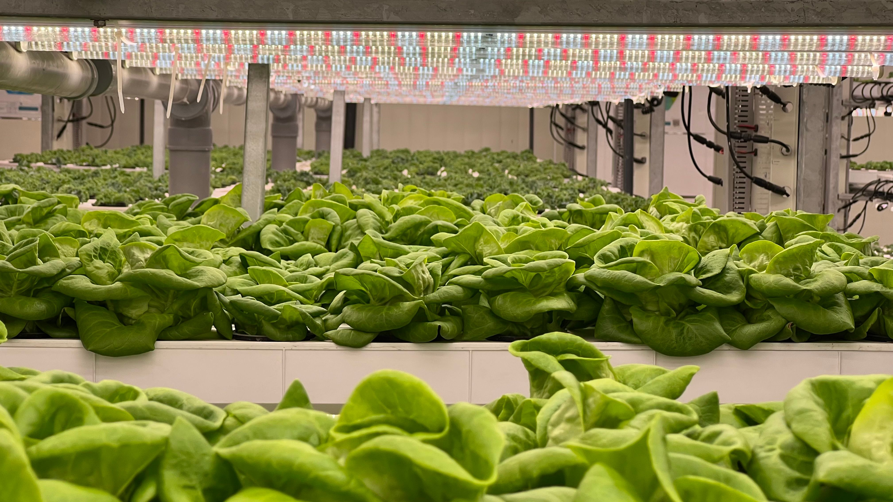
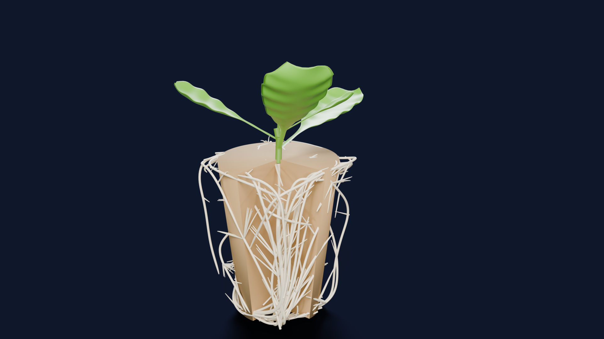
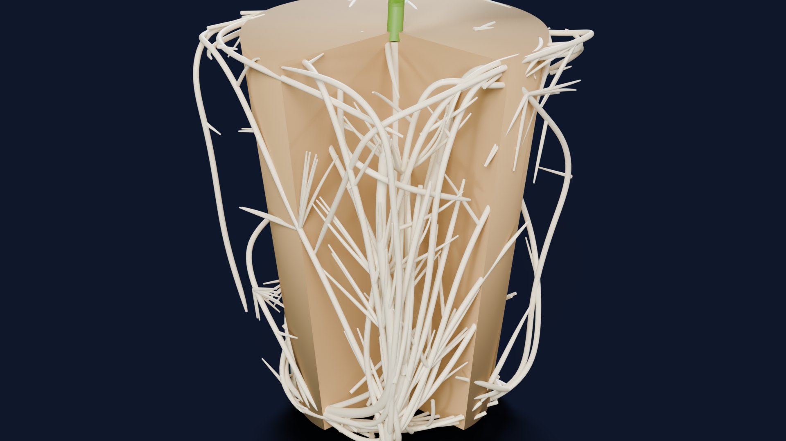
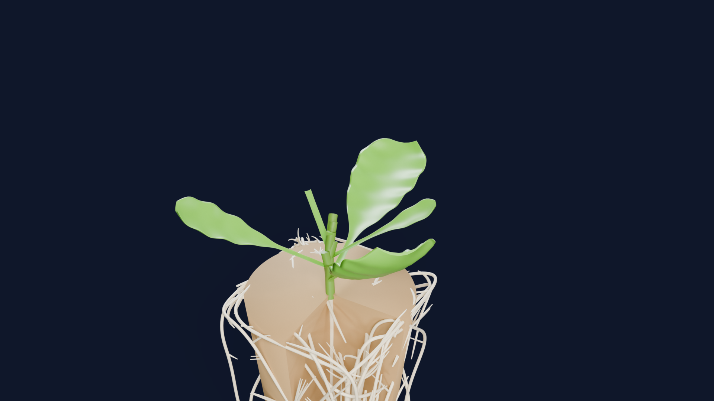

Overview
Radiculae is a startup I founded to turn research on cellulose into practical, biodegradable materials for vertical farms.

Vertical farming grows crops in stacked layers indoors, with controlled light, water and climate.

We're developing cellulose-based growing plugs for vertical farms: small supports that hold plants and their roots as they grow.
Radiculae is a startup I founded to turn research on cellulose into practical, biodegradable materials for vertical farms.
We aim to replace plastic components with renewable cellulose alternatives that support more sustainable, resource-efficient vertical farming.
We aim to scale our cellulose solutions for vertical farms and support sustainable urban food production.
To validate cellulose-based substrates under real-world irrigation conditions, we simulated root system development for lettuce (Lactuca sativa) under cyclical ebb-and-flow dynamics.
Root growth pathways are modeled for Lactuca sativa over a 14-day growth cycle. The simulation factors in structural tortuosity, moisture retention characteristics, and drying conditions under periodic ebb-and-flow irrigation. The results show that cellulose-based substrates offer a highly versatile structure that can promote balanced root branching and minimize localized anoxia compared to traditional rockwool and peat-based media while being sustainable and easily accessible.



Compare sustainability, design flexibility and growing performance.
| Property | Cellulose | Peat | Rockwool |
|---|---|---|---|
| Renewable feedstock | ✓ | ✕ | ✕ |
| Biodegradable plug | ? | − | ✕ |
| Recycling or composting route | ? | − | − |
| Adaptable shape or formulation | ? | ✓ | ✓ |
| Ebb-and-flow compatible | ? | ✓ | ✓ |
| Holds shape when wet | ? | − | ✓ |
| Proven growth performance | ? | ✓ | ✓ |
We're developing renewable cellulose growing plugs. Their performance and disposal options still need to be tested and validated.
References: Grodan: stone wool and formats, Grodan: recycling routes, University of Saskatchewan: peat, European Commission: alternatives to stone wool.